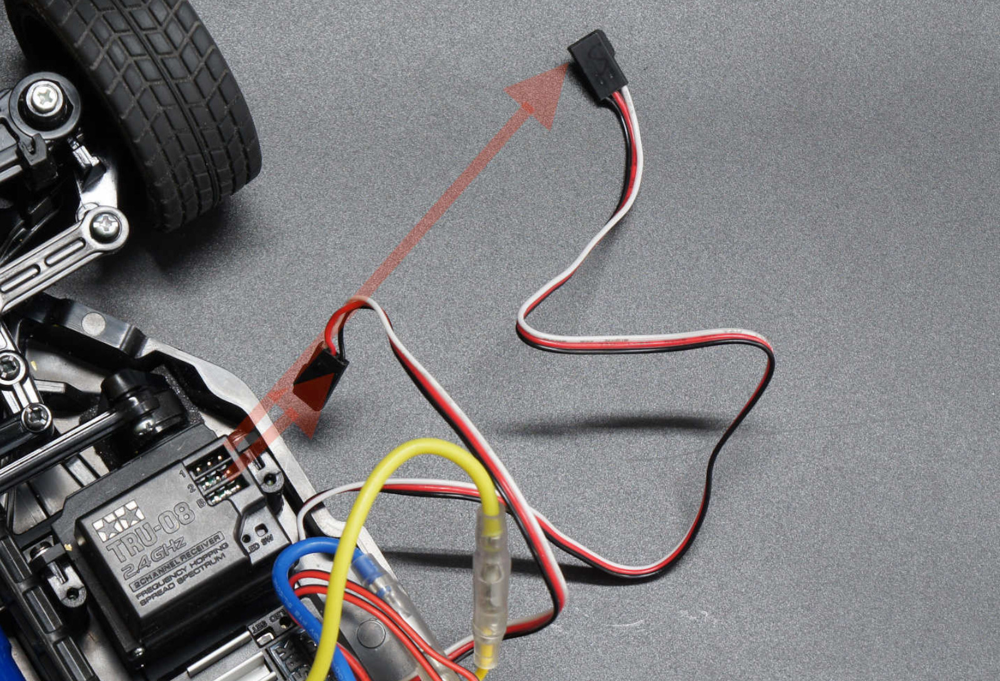
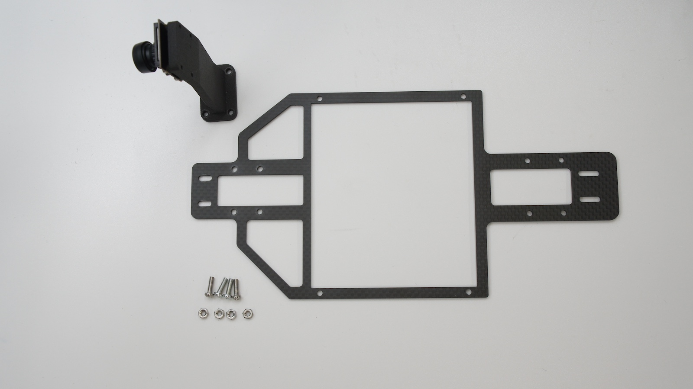
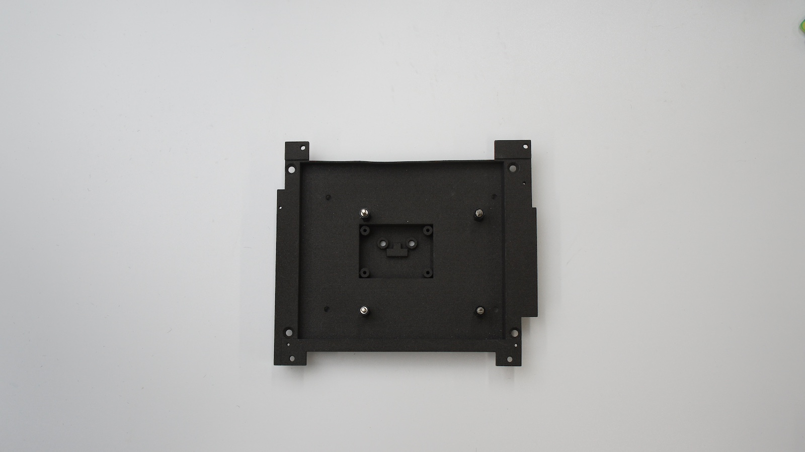
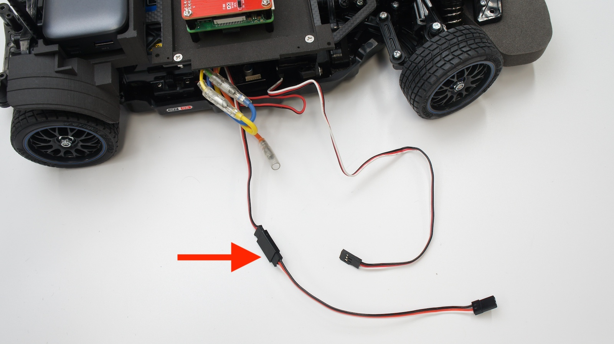
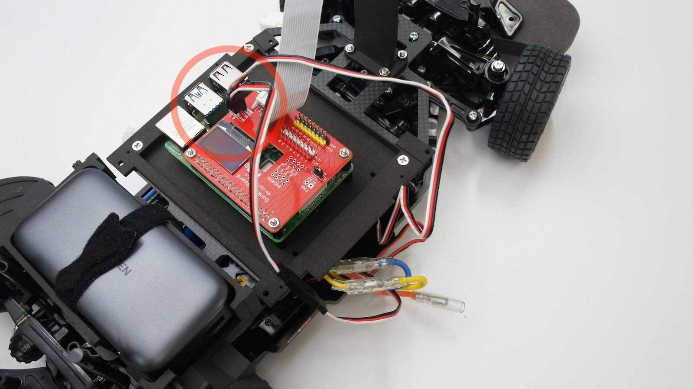

FaBo AI Car Kitの組み立て

【対象モデル】
| コード番号 | 名称 | TT-02 XB | Raspberry Pi |
|---|---|---|---|
| FA2025-B | FaBo AI Car Kit Basic Edition 通常版 | ◯ | ◯ |
| FA2025-B-NV | FaBo AI Car Kit Basic Edition 車体なし | x | ◯ |
| FA2025-B-BB | FaBo AI Car Kit Basic Edition Rasberry Piなし | ◯ | × |
RCカー(完成品)の改造
組み立て済みのRCカー本体を用意します。

モーターカバーのネジ4本を取り外し、モーターカバーを取り外します。

プラスドライバーでねじを外します。

カーバーを取ります。

矢印の箇所のネジ4本を取り外します。

矢印の取り外したねじは、このあとのカーボンパネル取り付けに使用します。

ケーブルを切断したり、傷つけないように注意し、ニッパーで矢印の結束バンドを切断します。

コネクタを受信機から取り外します。

RCカーのバッテリーフォルダは使いません。取り外してください。また、本モデルは受信機および送信機（プロポ）を使用しません。

AI Car Kitの組み立て
CSIカメラをカメラマウントに取り付けます。

取り付けには六角棒レンチを使います。
カメラマウントをカーボンパネルに取り付けます。

カメラと反対側からなべねじを通して、カメラ側は、ナットでスパナ（5.5mm)等とプラスドライバーでねじ止めします。
mount_jetsonにラズパイを取り付けます。
表は、スペーサーを取り付けます。

裏は、なべねじで固定します。

ラズパイをスペーサーにて固定します。

固定された様子になります。

マイクロSDカードをラズパイのSDカードスロットに挿入します。

mount_jetsonとカーボンパネルを結合します。

矢印の４箇所をねじ止めします。
スパナ(5.5mm)とドライバーでねじを締めます。

mount_backを取り付けします。

プラスドライバーとスパナ等で締め付けします。

上部の部分は完成です。
矢印のコネクタを写真のようにRCカーのバッテリー側に寄せます。

車体とカーボンパネルを連結します。（ラズパイバッテリー側）

車体とカーボンパネルを連結します。（カメラ側）
マジック結束バンドをmount_backにある穴に通します。

USBポートがある側を写真上側にして設置し、マジック結束バンドでモバイルバッテリーを固定します。
CSIカメラケーブルをCSIカメラと接続します。（コネクタは下接点）

拡張ボードにCSIカメラケーブルを通します。CSIケーブルの接点表裏にご注意願います。
ラズパイとCSIケーブルを接続します。
拡張ボードをナットで固定します。（ナットドライバー5mm 推奨）

PWM延長ケーブルでESCのケーブルを延長します。

基板記載の０はESC、１はサーボに接続してください。（挿入方法、挿入向きは間違えないでください。）

結束バンドでケーブルを束ねます。結束バンドの余分な部分をニッパー等で切り落とします。

F710rを開封しアルカリ乾電池を取り付けて、F710r付属のUSBドングルをラズパイに挿入します。

USB電源ケーブルを取り付けます。

RCカー電源のコネクタを接続します。

RCカー電源のスイッチをON側にします。
最後にレンズキャップを外します。ピントがずれている場合は、レンズ部分を調整してピント調整してください。
破損を防ぐため、走行はボディを被せてください。
使用しないときは、RCカーのコネクタを外しましょう。